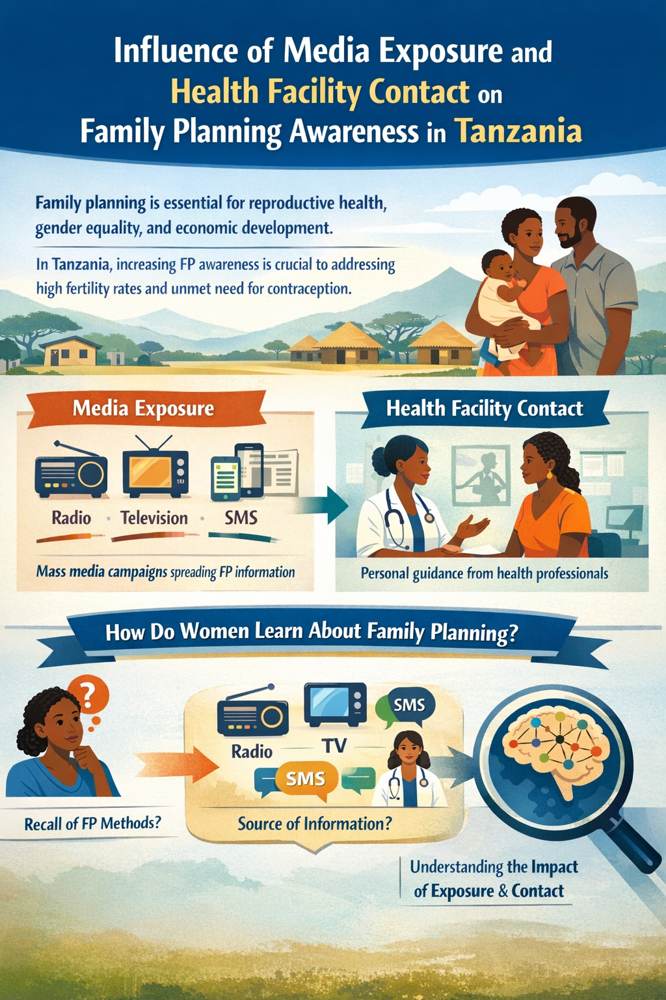
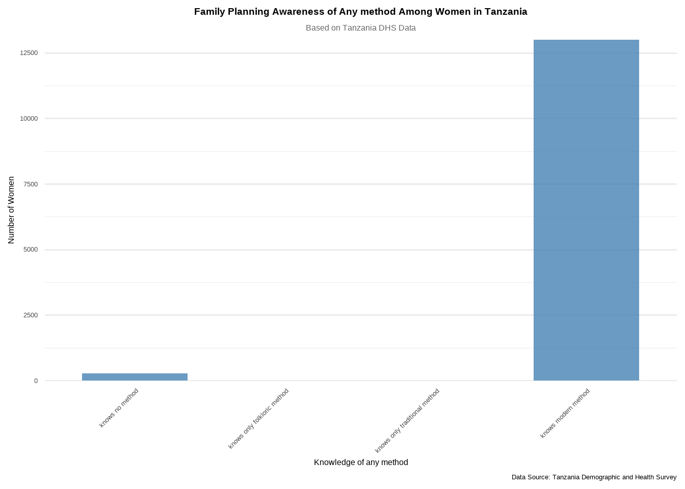
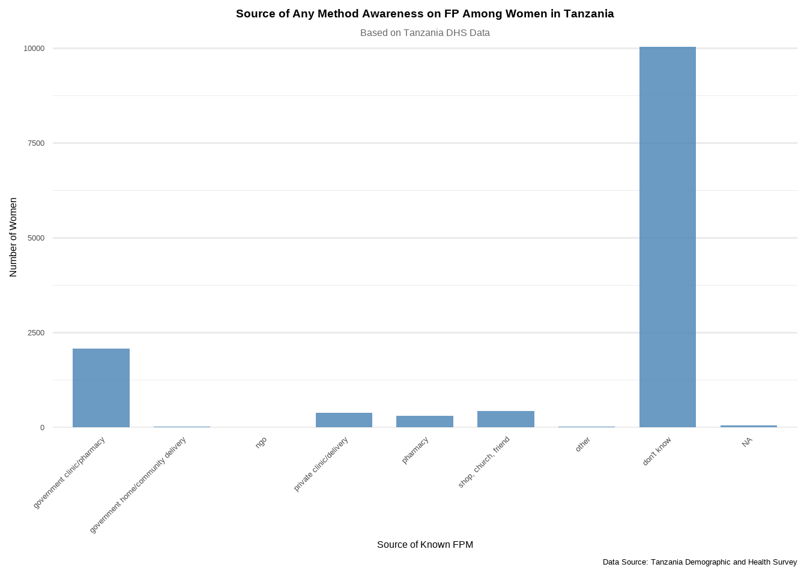
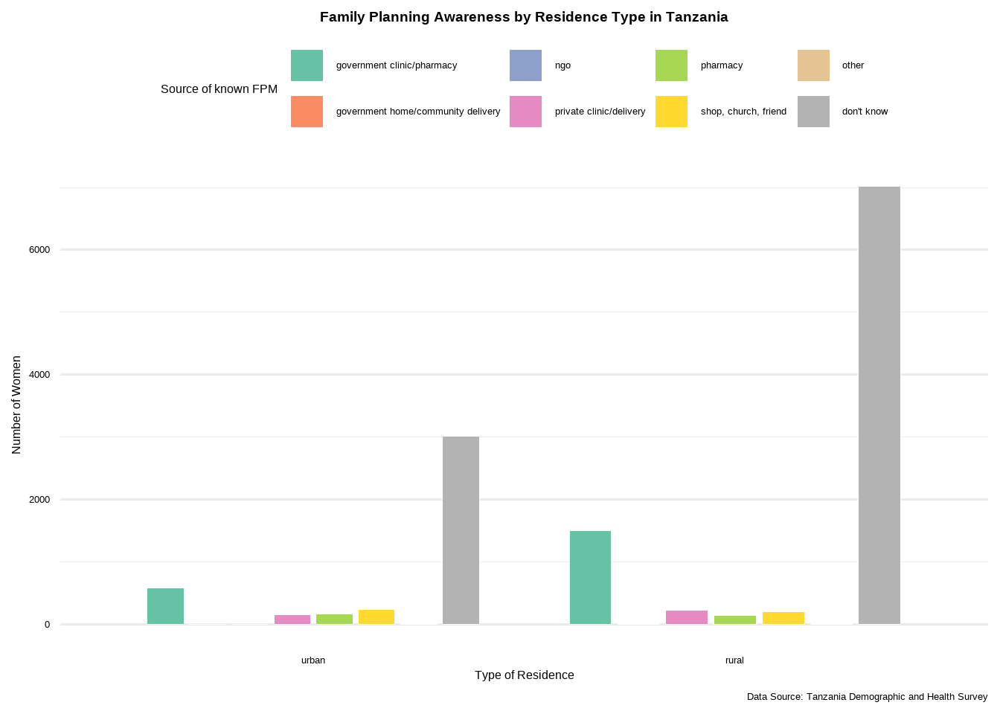
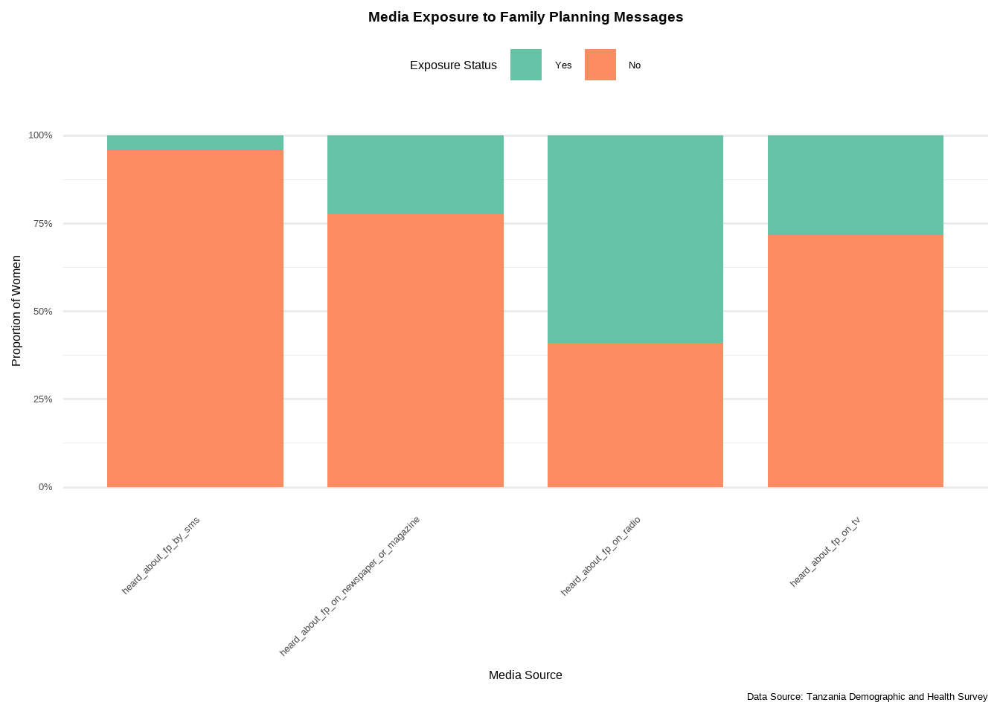
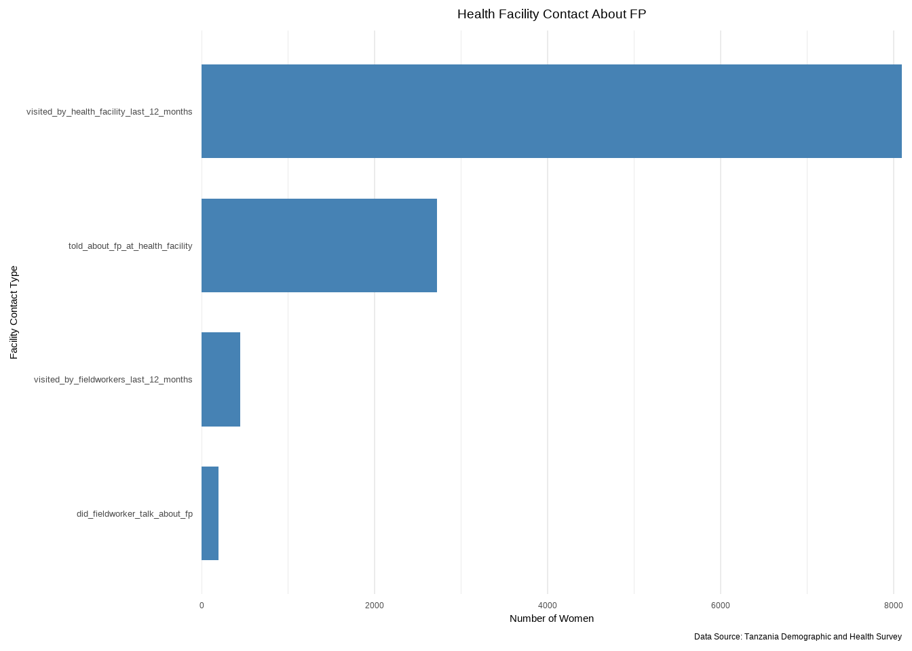
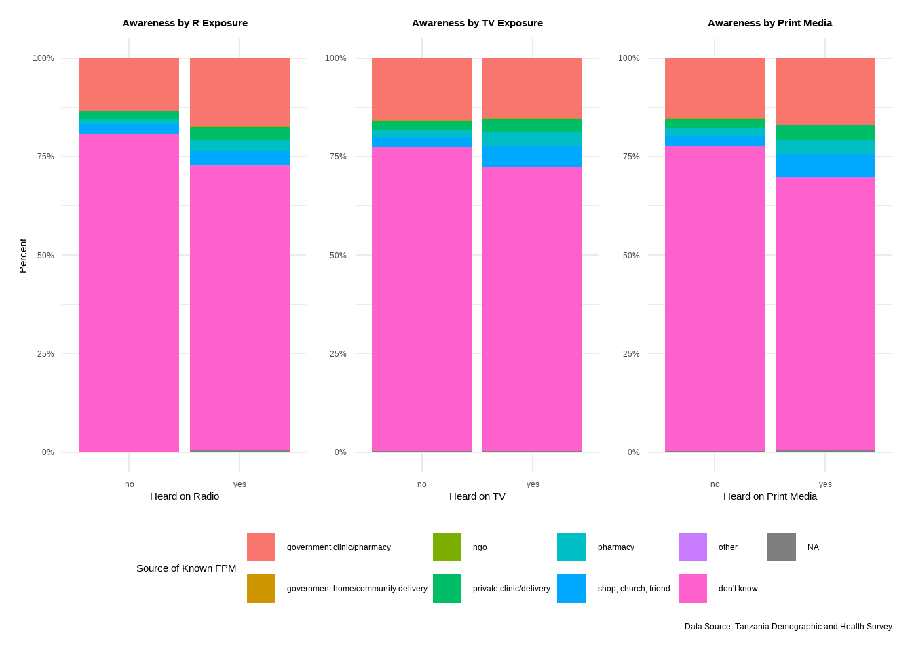

| knowledge of any method | n | percent |
|---|---|---|
| knows no method | 269 | 2.027740087 |
| knows only folkloric method | 1 | 0.007538067 |
| knows only traditional method | 6 | 0.045228403 |
| knows modern method | 12990 | 97.919493442 |

Introduction
Family planning (FP) is a vital aspect of reproductive health and autonomy. It enables individuals and couples to plan births and space children, which contributes significantly to maternal and child well-being, gender equality, and economic development. In Tanzania, where the fertility rate remains high and unmet need for contraception persists, improving FP awareness and access is a national priority.
Among the many factors influencing awareness and adoption of family planning methods, exposure to mass media and contact with health facilities play a pivotal role. Mass media campaigns delivered via radio, television, newspapers, or mobile phones can disseminate crucial reproductive health information across broad segments of the population. Simultaneously, interpersonal communication with health professionals during clinic visits offers tailored education, clarification, and emotional support.
This project investigates not only the general awareness of family planning among women of reproductive age in Tanzania but more importantly how different forms of media exposure and health facility contact influence that awareness. The core metric for influence is whether women recall any FP method and whether they cite specific sources such as radio, TV, SMS, newspapers, or health professionals as the source of their knowledge. This distinction allows us to move beyond mere awareness levels and explore how that awareness was acquired.
Abbreviations
| Abbreviation | Full Meaning |
|---|---|
| FP | Family Planning |
| TDHS | Tanzania Demographic and Health Survey |
| FPM | Family Planing Methods |
| mHealth | Mobile Health |
| SMS | Short Message Service |
| TV | Television |
| R | R Statistical Programming Language |
| NGO | Non-Governmental Organization |
Main objective:
To assess how media exposure and health facility contact influence awareness of family planning (FP) among women of reproductive age in Tanzania.
Objectives
To determine the proportion of Tanzanian women aged 15–49 who are aware of at least one family planning (FP) method.
To examine the influence of specific media channels—such as radio, television, newspapers, and SMS—on FP awareness by assessing whether women cite these as sources of information.
To evaluate the role of health facility contact in shaping FP knowledge, particularly through interactions with health professionals.
To identify disparities in media and health system influence across key demographic groups, including age, educational attainment, and place of residence.
Methodology
This analysis draws on data from the Tanzania Demographic and Health Survey (TDHS), using the Women’s Individual Recode dataset. After importing the dataset using the haven package, several data wrangling procedures were conducted with the help of the dplyr package to prepare the data for analysis.
The steps included:
Selecting relevant variables such as FP awareness, source of information, and key demographic characteristics using col_select().
The dataset was filtered to include only respondents who reported at least one known source of their family planning method, using filter(), to ensure the analysis focused on relevant cases within the target population..
Recoding and renaming variables for clarity using mutate() and case_when() to make the dataset more interpretable.
Grouping and summarizing data using group_by() and summarize() to calculate proportions and trends in FP awareness across subgroups.
Converting categorical variables into factors with meaningful labels using as_factor() from the haven package.
After wrangling the data, the analysis focused on the following key variables:
Whether respondents were aware of any family planning (FP) method, and whether they could identify the source of their FP knowledge.
The specific source(s) from which respondents reported learning about FP such as radio, television, newspapers, SMS messages, or health workers.
Core demographic and socioeconomic factors, including age, educational attainment, and place of residence (urban or rural).
Visualizations were created using the ggplot2 package to illustrate patterns in FP awareness and source recall across different groups. A summary table was also generated using the flextable package to clearly present aggregate insights. The analysis aimed to identify which information channels were most influential and how their impact varied across population subgroups.
Results and Findings
To begin, we assess the general level of awareness regarding FP and any contraceptive method among women in Tanzania.
How widespread is awareness of FP methods among women?

The findings indicate that the majority of women in Tanzania are aware of at least one modern family planning (FP) method. This suggests that public health efforts and communication strategies promoting modern contraceptive methods have been largely effective in reaching the target population.
In contrast, awareness of traditional and folkloric methods is extremely limited, with very few women reporting knowledge of these options. Similarly, only a small proportion of women reported not knowing any FP method at all. This pattern reflects a strong emphasis on modern methods in current reproductive health education and outreach programs.
However, awareness alone is not the end point, further I explored where women recalled hearing or learning about these methods. This information offers direct evidence of media and health system influence.
How many women recall where they learned about their known FP method?
| source known for any method | n | percent |
|---|---|---|
| government clinic/pharmacy | 2078 | 15.664103724 |
| government home/community delivery | 9 | 0.067842605 |
| ngo | 1 | 0.007538067 |
| private clinic/delivery | 369 | 2.781546811 |
| pharmacy | 297 | 2.238805970 |
| shop, church, friend | 429 | 3.233830846 |
| other | 14 | 0.105532941 |
| don't know | 10028 | 75.591738278 |
| NA | 41 | 0.309060757 |

The results on family planning (FP) awareness sources among women in Tanzania reveal a concerning trend. A majority of respondents indicated “Don’t know” when asked where they learned about FP methods. This suggests that many women either cannot recall the source of their information or may have never received clear or direct communication about FP. The second most common source reported was government clinics or pharmacies, highlighting the important role that public health facilities continue to play in delivering FP information.
In contrast, only a small number of women reported learning about FP from private clinics, pharmacies, shops, churches, or friends. These sources appear to have limited reach or influence in the current FP communication landscape. More notably, no respondents reported receiving FP information through government community delivery programs or NGOs, which points to a gap in outreach at the community and NGO levels.
What proportion of women in rural and urban areas can identify the source of their FP knowledge?

In both rural and urban areas of Tanzania, the majority of women reported not knowing the source of their family planning (FP) information, with rural women showing a higher proportion of “Don’t know” responses. In both settings, government clinics and pharmacies were the most commonly identified sources of FP awareness. Other sources such as private clinics, pharmacies, NGOs, community delivery, and informal contacts like shops or churches were mentioned by very few women, especially in rural areas. These results highlight a need for stronger and more targeted FP communication, particularly in rural areas, to ensure women receive and remember accurate information about family planning services.
We assess how exposure to various media sources—radio, television, SMS, and newspapers—relates to family planning awareness.

The descriptive analysis of media exposure to FP messages among women in Tanzania highlights significant variations across different communication channels. Radio emerged as the most effective medium, with a higher number of women reporting “Yes” to having heard about FP messages on the radio compared to those who had not.
In contrast, SMS-based communication showed the weakest reach, with a much higher number of women indicating they had not received FP messages via SMS. Exposure through television showed some improvement, with the number of women responding “Yes” increasing slightly, but the majority still reported not hearing FP messages on TV. A similar trend was observed for newspapers and magazines, where “No” responses remained dominant.
We now examine the role of health facility contact in promoting knowledge of family planning methods.
| facility_variable | percent_yes |
|---|---|
| visited_by_fieldworkers_last_12_months | 3.361978 |
| did_fieldworker_talk_about_fp | 44.843049 |
| visited_by_health_facility_last_12_months | 61.041997 |
| told_about_fp_at_health_facility | 33.596838 |

The analysis of health facility contact regarding family planning (FP) reveals that fieldworkers play a more prominent role in FP outreach than formal health facilities. A high number of women reported being visited by fieldworkers in the past 12 months, and many of these fieldworkers discussed FP during their visits. In contrast, relatively few women reported visiting health facilities in the past 12 months or being told about FP during such visits.
Relationship Between Media Channels and FP Awareness: A Cross-tab Analysis

Each panel of the graph compares women who said “Yes” or “No” to having heard about FP through a specific media source (Radio, TV, or Newspaper).
“Yes” = women who have been exposed to FP messages through that media (e.g., they heard FP on the radio).
“No” = women who have not been exposed to FP through that media.
Within each group, we look at where these women say they got FP information from (clinic, pharmacy, don’t know, etc.).
The crosstab shows that across radio, television, and print media exposure, the majority of women reported “Don’t know” as their source of FP information. This indicates a significant gap in message clarity and recall, even among those exposed to FP messages through media. While radio exposure slightly improves recognition of specific sources like government clinics/pharmacies, the overall improvement across all media types is minimal. Other sources such as private clinics, pharmacies, NGOs, or community delivery remain rarely cited, regardless of media exposure. These findings highlight the need to strengthen the effectiveness and memorability of FP messages, especially through media, to ensure women can recall both the content and source of the information.
To better understand the reach of FP messaging, we analyze how awareness sources differ by region, age, and education.
Variation in Family Planing Awareness Sources by region
region | total_responses | percent |
|---|---|---|
dar es salaam | 797 | 6.0 |
mjini magharibi | 708 | 5.3 |
simiyu | 587 | 4.4 |
tabora | 560 | 4.2 |
geita | 535 | 4.0 |
mara | 531 | 4.0 |
shinyanga | 516 | 3.9 |
mwanza | 496 | 3.7 |
kigoma | 491 | 3.7 |
katavi | 466 | 3.5 |
tanga | 465 | 3.5 |
manyara | 434 | 3.3 |
rukwa | 425 | 3.2 |
arusha | 420 | 3.2 |
kagera | 416 | 3.1 |
singida | 413 | 3.1 |
ruvuma | 383 | 2.9 |
lindi | 380 | 2.9 |
mbeya | 374 | 2.8 |
kilimanjaro | 370 | 2.8 |
kaskazini unguja | 366 | 2.8 |
kusini pemba | 366 | 2.8 |
kusini unguja | 361 | 2.7 |
njombe | 359 | 2.7 |
mtwara | 348 | 2.6 |
morogoro | 345 | 2.6 |
dodoma | 343 | 2.6 |
iringa | 340 | 2.6 |
kaskazini pemba | 338 | 2.5 |
pwani | 333 | 2.5 |
The chart highlights significant regional variation in how women across Tanzania recall the source of their family planning (FP) knowledge. In nearly every region, a substantial share of respondents answered “Don’t know”, pointing to widespread challenges in information retention or a lack of clarity regarding where they first learned about FP. Notably, the proportion of “Don’t know” responses differs considerably across regions.
Regions such as Tabora (78.9%), Katavi (84.1%), Geita (89.2%), Simiyu (86.2%), Mjini Magharibi (91.4%), Kusini Pemba (95.1%), Kaskazini Unguja (91%), and Shinyanga (80.2%) exhibit particularly high levels of uncertainty. This suggests that women in these areas may be receiving less effective or less frequent FP messaging, or that the communication methods used are not sufficiently engaging or memorable.
In contrast, regions like Ruvuma (55.1%), Pwani (66.4%), Kilimanjaro (65.9%), and Mtwara (52.6%) show better performance, with fewer women responding “Don’t know.” Notably, in Ruvuma, 31.1% of women specifically cited a government clinic or pharmacy as the source of their FP knowledge—indicating stronger linkages between FP education and health service delivery. These differences may reflect variations in local health infrastructure, the presence of outreach programs, or the effectiveness of community health workers in reinforcing key messages.
Other sources such as private clinics, pharmacies, and community based settings (e.g., friends, religious institutions, or shops) appear sporadically across regions but contribute minimally to overall FP awareness.
Sources of Family Planning Awareness by Age Group
The chart illustrates that across all age groups, “Don’t know” is the most commonly reported response, indicating widespread uncertainty among women regarding the source of their family planning (FP) knowledge. While this trend is consistent, notable differences emerge across age groups in terms of source recall and information retention.
Women in the 15–19 age group exhibit the highest proportion of “Don’t know” responses, exceeding 90%, suggesting that adolescents are either less exposed to reliable FP messaging or less confident in identifying its source.
As age increases particularly between 25 and 44 years there is a gradual improvement in source recall. Women in the 30–39 age range show the highest awareness of specific sources, particularly government clinics and pharmacies, indicating stronger integration of FP messaging with health service use in this group.
Among women aged 45 and above, the rate of “Don’t know” responses begins to rise again, which may reflect a decline in recent exposure or memory of FP campaigns and services.
Other sources including pharmacies, private clinics, NGOs, and informal channels such as shops, churches, and friends—appear across age groups but contribute minimally to FP source recall.
Family Planning Information Sources Stratified by Educational Attainment
The results reveal that across all levels of education, the dominant response is “Don’t know”, indicating that many women, regardless of their educational attainment, struggle to identify where they received FP information. This suggests a general lack of clarity or recall concerning the source of FP knowledge.
Women with primary and secondary education show slightly higher awareness of formal sources such as government clinics/pharmacies compared to those with no education, where recognition of any specific FP source is very low. This indicates that education does play a role in improving awareness but may not be sufficient to ensure clear source identification.
Interestingly, informal sources like shops, churches, and friends are reported more often than NGOs or community delivery across most education levels, though this too declines with lower educational attainment. Respondents with no education showed minimal mention of any FP source, reflecting their limited access to or understanding of available FP services.
Discussion
This analysis highlights the key role of media exposure and health facility contact in shaping family planning (FP) awareness among Tanzanian women. Radio emerged as the most influential source, especially among rural and less-educated women, due to its wide accessibility and low barriers to use.
While television and newspapers were cited less frequently, they still contributed to awareness, particularly among urban and educated groups. These differences suggest the need to tailor FP communication strategies based on media access and literacy levels.
SMS-based communication, though less common, showed promise. Women who received FP messages via SMS had higher awareness, pointing to the potential of mobile health (mHealth) to complement traditional outreach especially among younger, urban women.
Health facility contact also proved important. Women who had visited clinics in the past year were more likely to cite health workers as a source of FP information. This supports the need to integrate FP counseling into routine care to strengthen informed decision-making.
However, gaps persist. Many women especially adolescents and those in rural areas reported “Don’t know” when asked about their source of FP knowledge. This suggests either low exposure or weak message retention. More inclusive, targeted, and memorable strategies are needed to reach these groups effectively.
In summary, while various channels contribute to FP awareness, radio and health workers remain the most impactful. Efforts should focus on strengthening these channels while expanding mHealth solutions and addressing disparities in source recall.
Recommendations
Improve message clarity: FP messages should clearly identify the source (clinic, worker, media) and repeat it consistently.
Strengthen training for fieldworkers and health staff to ensure FP education is part of every visit.
Leverage radio more strategically, especially in rural areas and among younger women.
Target youth and uneducated women with simplified and memorable FP communication strategies.
Encourage community-level engagement (churches, schools, markets) to reinforce messages from multiple sources.
Conclusion
This project goes beyond measuring family planning (FP) awareness among Tanzanian women by exploring the sources through which that awareness is acquired. The findings emphasize the significant influence of mass media particularly radio and direct engagement with health professionals in shaping women’s knowledge of FP methods.
To enhance the effectiveness of public health communication, strategies should continue to prioritize these proven channels while also expanding the use of mobile health (mHealth) platforms. Ensuring that health facilities consistently serve as hubs for FP education will further strengthen outreach efforts.
Importantly, closing the remaining gaps in awareness especially among adolescents, rural women, and those with limited education requires tailored, inclusive communication approaches. Leveraging both traditional and digital platforms, rooted in community trust and cultural relevance, will be essential to achieving equitable access to FP information and services across all population groups.